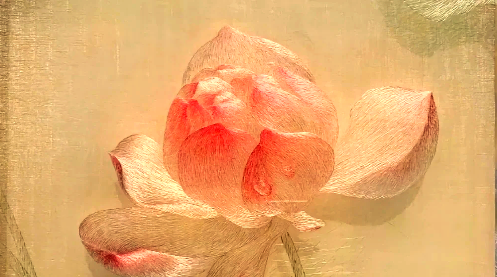

Selected Artworks

The Observer

Golden Bloom
Bamboo Forest
Bamboo Forest

Hand-stitched by master embroiderers from Suzhou.
Traditional oriental craft redefined for contemporary global art collectors.
In Suzhou, master embroiderers preserve a 2,500-year-old craft. Each piece is hand-stitched with mulberry silk thread—no two are exactly alike.
Our mission is to bridge ancient Suzhou embroidery techniques with contemporary global design, creating timeless art pieces that belong in modern homes worldwide.
Read Full Story →
Each Suzhou embroidery piece represents 2,500 years of intangible cultural heritage. Our master artisans in Suzhou dedicate 10-40 hours to create a single artwork, using only 100% mulberry silk thread with naturally derived dyes.
We don't mass-produce. We don't compromise quality. Every piece is one-of-a-kind, carrying the soul of Suzhou's embroidery tradition into contemporary global art collections.